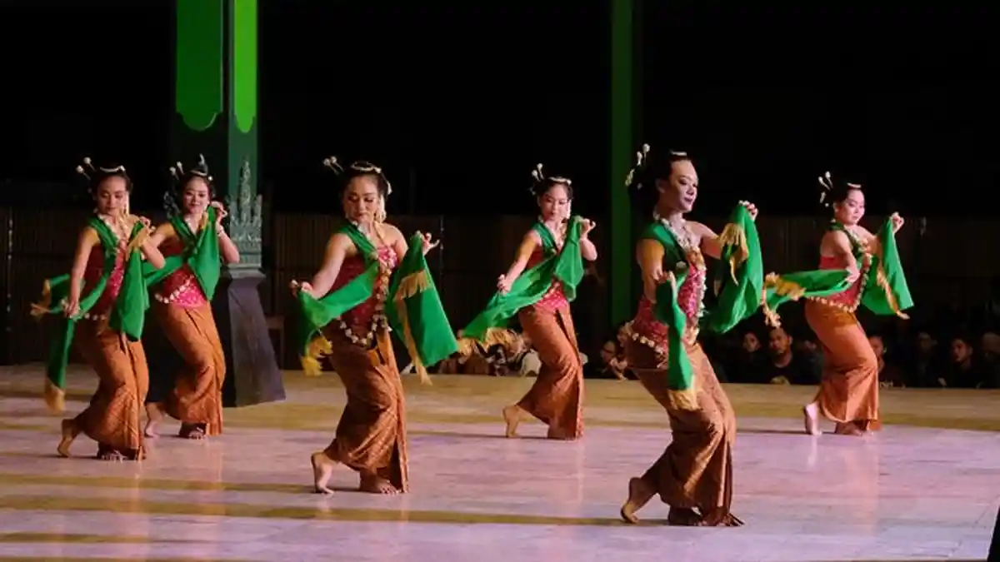
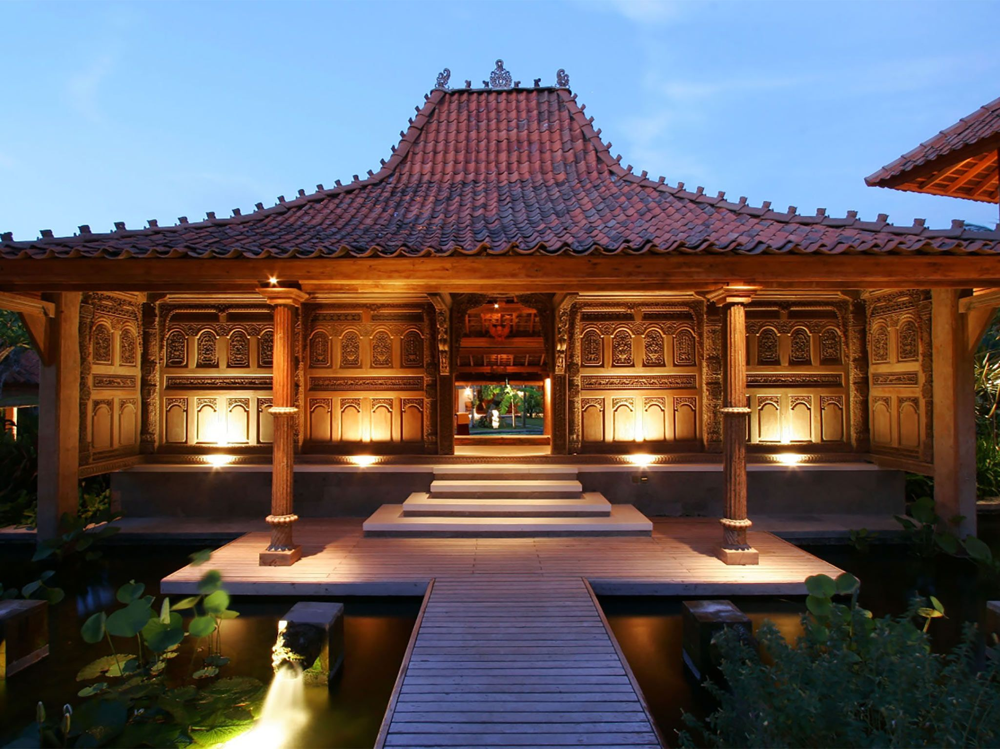
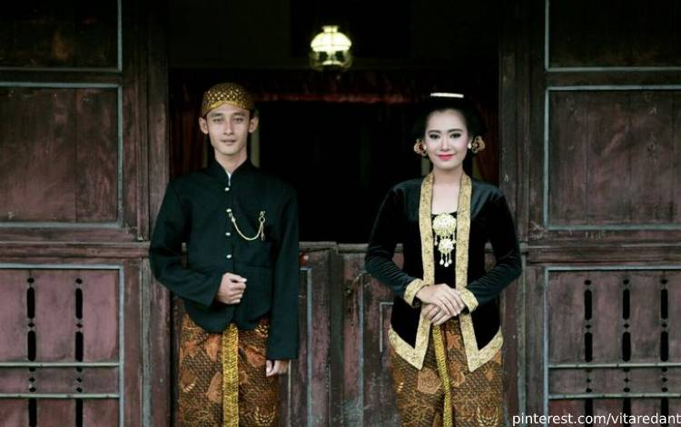

Ragam Budaya
Warisan budaya yang tetap lestari hingga sekarang

Seni Tari
Seni tari di Yogyakarta dikenal dengan gerakan yang halus, anggun, dan penuh makna. Setiap tarian mencerminkan nilai kehidupan serta filosofi budaya Jawa. Keindahannya menjadikan tari sebagai salah satu daya tarik utama budaya Yogyakarta.
Adat Istiadat
Adat istiadat di Yogyakarta masih sangat dijaga dan dilestarikan hingga saat ini. Setiap tradisi memiliki makna filosofis yang mendalam dan diwariskan secara turun-temurun. Hal ini menjadi bukti kuatnya identitas budaya masyarakat Yogyakarta.

Batik
Batik Yogyakarta memiliki ciri khas motif klasik yang sarat nilai filosofi. Setiap corak mencerminkan makna kehidupan, harapan, dan kebijaksanaan. Hingga kini, batik tetap menjadi simbol budaya yang terus dilestarikan.

Rumah Tradisional
Rumah tradisional Yogyakarta memiliki bentuk arsitektur yang khas dan penuh makna. Setiap bagian bangunan mencerminkan filosofi kehidupan dan keharmonisan. Keunikan ini menjadikan rumah adat sebagai bagian penting dari budaya Jawa.

Alat Musik Tradisional
Alat musik tradisional Yogyakarta menghasilkan alunan nada yang khas dan menenangkan. Instrumen ini sering digunakan dalam berbagai pertunjukan seni dan acara adat. Keberadaannya menjadi bagian penting dalam melestarikan budaya daerah.

Pakaian Adat
Pakaian adat Yogyakarta memiliki desain yang elegan dan sarat makna. Setiap unsur busana mencerminkan nilai kesopanan dan filosofi kehidupan. Hingga kini, pakaian adat masih digunakan dalam berbagai acara resmi dan tradisi.